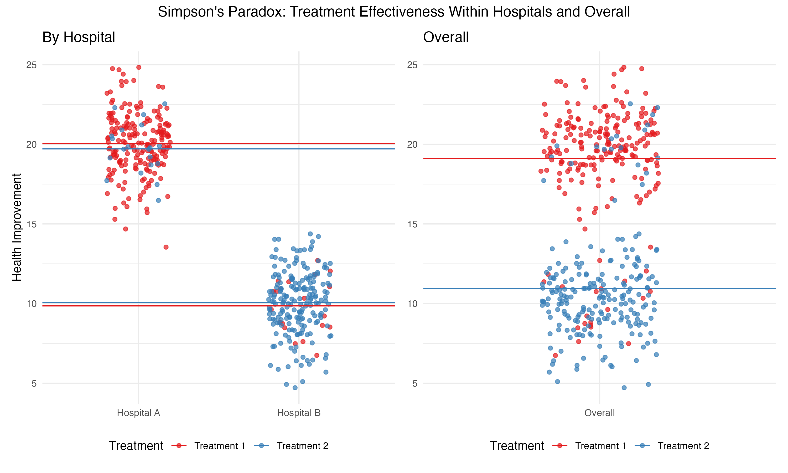

Simpson’s Paradox: A Simple Illustration
Background
Simpson’s paradox is one of the most counterintuitive phenomena in data analysis. It describes situations where a trend observed within groups disappears—or even reverses—when the data is aggregated. The underlying cause is often a confounding variable that distorts the overall trend. Let’s examine a concrete example.
A Closer Look
An Example
Imagine two hospitals, \(A\) and \(B\), treating patients for a particular condition with two treatment options, \(T_1\) and \(T_2\). Hospital \(A\), located in a higher-income neighborhood, primarily receives healthier patients, while Hospital \(B\), in a lower-income neighborhood, tends to treat sicker patients. The effectiveness of the treatments is measured as improvement in a continuous health score.
We are interested in examining whether one of the treatment options leads to better health outcomes. Consider the following data gathered across both hospitals.
| Hospital | Treatment | Health Improvement | N |
|---|---|---|---|
| A | \(T_1\) | 20 | 90 |
| A | \(T_2\) | 20 | 10 |
| B | \(T_1\) | 10 | 10 |
| B | \(T_2\) | 10 | 90 |
Let’s now look at what happens when we combine the data from both hospitals.
| Treatment | N | Health Improvement |
|---|---|---|
| \(T_1\) | 100 | 19 = 20 * .9 + 10 * .1 |
| \(T_2\) | 100 | 11 = 10 * .9 + 20 * .1 |
Within each hospital, the data shows that both treatments are equally effective. However, combining the data across both hospitals reveals that treatment \(T_1\) appears to be significantly more effective overall. Why does this happen?
The confounding variable here is the underlying health status of patients. Hospital \(A\) treats mostly healthier patients, while Hospital \(B\) handles more severe cases. This difference in patient distribution influences the overall success rates of the treatments, even though both treatments perform identically within each hospital.
A Visualization
To illustrate, imagine a scatter plot where each dot represents a patient. The color of the dot indicates the treatment they received, and the horizontal lines represent the average health improvement for each group. The vertical axis depicts the outcome variable (health improvement).
# Load required libraries
library(ggplot2)
library(patchwork)
library(dplyr)
# Set random seed for reproducibility
set.seed(4904)
# Define data dimensions
n_a <- 200
n_b <- 20
# Create the dataset
data <- data.frame(
Hospital = rep(c("Hospital A", "Hospital B"), each = n_a + n_b),
Treatment = c(
rep("Treatment 1", n_a), rep("Treatment 2", n_b), # Hospital A
rep("Treatment 1", n_b), rep("Treatment 2", n_a) # Hospital B
),
Improvement = c(
rnorm(n_a, mean = 20, sd = 2), rnorm(n_b, mean = 20, sd = 2), # Hospital A
rnorm(n_b, mean = 10, sd = 2), rnorm(n_a, mean = 10, sd = 2) # Hospital B
),
Aggregated = "Overall"
)
# Calculate mean improvement for each treatment and hospital
mean_improvement <- data %>%
group_by(Hospital, Treatment) %>%
summarize(Mean_Improvement = mean(Improvement), .groups = "drop")
# Calculate overall mean improvement for each treatment
overall_mean <- data %>%
group_by(Treatment) %>%
summarize(Mean_Improvement = mean(Improvement), .groups = "drop")
# Create the disaggregated plot
plot1 <- ggplot(data, aes(x = Hospital, y = Improvement, color = Treatment)) +
geom_point(position = position_jitter(width = 0.2), alpha = 0.7) +
geom_hline(data = mean_improvement, aes(yintercept = Mean_Improvement, color = Treatment), linetype = "solid") +
labs(
title = "By Hospital",
x = NULL,
y = "Health Improvement",
color = "Treatment"
) +
theme_minimal() +
scale_color_brewer(palette = "Set1")
# Create the aggregated plot
plot2 <- ggplot(data, aes(x = Aggregated, y = Improvement, color = Treatment)) +
geom_point(position = position_jitter(width = 0.2), alpha = 0.7) +
geom_hline(data = overall_mean, aes(yintercept = Mean_Improvement, color = Treatment), linetype = "solid") +
labs(
title = "Overall",
x = NULL,
y = NULL
) +
theme_minimal() +
scale_color_brewer(palette = "Set1") +
theme(legend.position = "none")
# Combine the plots with a common legend and title
final_plot <- (plot1 + plot2) +
plot_annotation(
title = "Simpson's Paradox: Treatment Effectiveness Within Hospitals and Overall",
theme = theme(plot.title = element_text(hjust = 0.5))
) &
theme(legend.position = "bottom")
# Display the combined plot
print(final_plot)# load libraries
import numpy as np
import pandas as pd
import matplotlib.pyplot as plt
import seaborn as sns
np.random.seed(1988)
# Define data dimensions
n_a = 200
n_b = 20
# Create the dataset
hospital = ['Hospital A'] * (n_a + n_b) + ['Hospital B'] * (n_a + n_b)
treatment = (
['Treatment 1'] * n_a + ['Treatment 2'] * n_b + # Hospital A
['Treatment 1'] * n_b + ['Treatment 2'] * n_a # Hospital B
)
improvement = (
list(np.random.normal(20, 2, n_a)) + list(np.random.normal(20, 2, n_b)) + # Hospital A
list(np.random.normal(10, 2, n_b)) + list(np.random.normal(10, 2, n_a)) # Hospital B
)
aggregated = ['Overall'] * (2 * (n_a + n_b))
data = pd.DataFrame({
'Hospital': hospital,
'Treatment': treatment,
'Improvement': improvement,
'Aggregated': aggregated
})
# Calculate mean improvement for each treatment and hospital
mean_improvement = data.groupby(['Hospital', 'Treatment'], as_index=False)['Improvement'].mean()
mean_improvement.rename(columns={'Improvement': 'Mean_Improvement'}, inplace=True)
# Calculate overall mean improvement for each treatment
overall_mean = data.groupby(['Treatment'], as_index=False)['Improvement'].mean()
overall_mean.rename(columns={'Improvement': 'Mean_Improvement'}, inplace=True)
# Create the disaggregated plot
plt.figure(figsize=(12, 6))
plt.subplot(1, 2, 1)
sns.stripplot(data=data, x='Hospital', y='Improvement', hue='Treatment', jitter=0.2, alpha=0.7, dodge=True)
for _, row in mean_improvement.iterrows():
plt.axhline(y=row['Mean_Improvement'], color=sns.color_palette('Set1')[0 if row['Treatment'] == 'Treatment 1' else 1], linestyle='solid')
plt.title("By Hospital")
plt.xlabel(None)
plt.ylabel("Health Improvement")
plt.legend(title="Treatment", loc='upper right')
plt.grid(True)
# Create the aggregated plot
plt.subplot(1, 2, 2)
sns.stripplot(data=data, x='Aggregated', y='Improvement', hue='Treatment', jitter=0.2, alpha=0.7, dodge=True)
for _, row in overall_mean.iterrows():
plt.axhline(y=row['Mean_Improvement'], color=sns.color_palette('Set1')[0 if row['Treatment'] == 'Treatment 1' else 1], linestyle='solid')
plt.title("Overall")
plt.xlabel(None)
plt.ylabel(None)
plt.legend([], [], frameon=False)
plt.grid(True)
# Add a common title
plt.suptitle("Simpson's Paradox: Treatment Effectiveness Within Hospitals and Overall", fontsize=14)
plt.tight_layout(rect=[0, 0, 1, 0.95])
plt.show()
In the aggregated data, \(T_1\) shows a higher average improvement, creating the illusion of greater effectiveness. But when disaggregated by hospital, the averages for \(T_1\) and \(T_2\) are identical.
Where to Learn More
Start with the Wikipedia entry, where you will find all necessary additional resources.
Bottom Line
Simpson’s paradox manifests when an observable pattern within groups disappears if the data is aggregated.
It is a reminder of the critical role confounding variables play in data analysis.
It underscores the importance of stratifying data by meaningful subgroups and carefully considering the context before drawing conclusions from aggregated statistics.